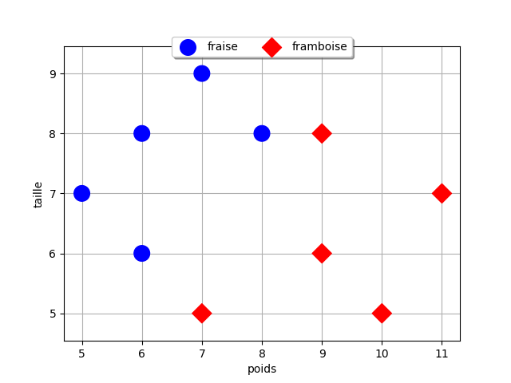
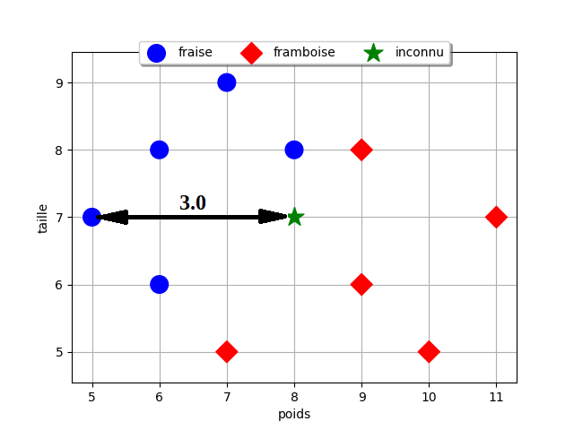
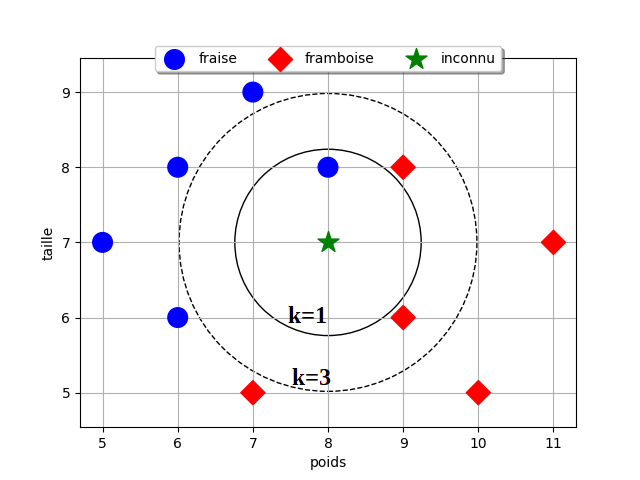
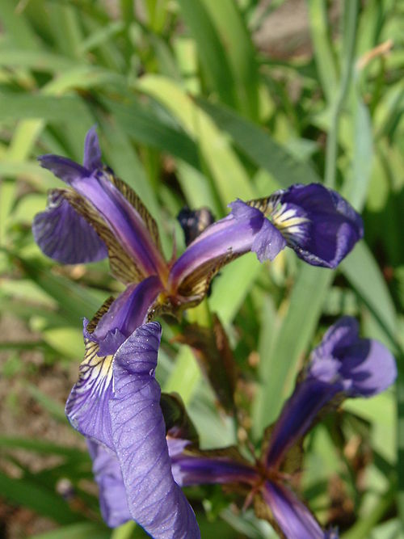

Algorithme des k plus proches voisins
Apprentissage automatique (machine learning )
L'apprentissage automatique, ou machine learning en anglais, est un domaine clé de l'intelligence artificielle. Il repose sur des méthodes mathématiques et statistiques qui permettent aux ordinateurs d'apprendre à partir de données : autrement dit, à améliorer leurs performances dans l'exécution de certaines tâches, sans que chaque étape soit explicitement programmée.
L'apprentissage automatique comporte généralement deux phases. Une première phase d'apprentissage (ou entrainement) consiste à analyser un ensemble de données connues (données d’entrainement) afin de construire un modèle. Une fois ce modèle déterminé, la seconde phase de production (ou d'inférence) consiste à lui soumettre de nouvelles données pour obtenir une prédiction, une classification ou une décision.
On distingue trois principaux types d'apprentissage automatique :
| Type d'apprentissage | Description | Exemples |
|---|---|---|
| 🧩 L'apprentissage supervisé | Les données d'entrainement incluent les réponses attendues | Prédiction météo, reconnaissance d'images |
| 🔍 L'apprentissage non supervisé | Les données sont brutes, l'algorithme doit trouver des structures cachées | Regroupement de clients, segmentation marketing |
| 🎮 L'apprentissage par renforcement | L'algorithme apprend en interagissant avec son environnement, il reçoit des récompenses ou pénalités | Jeux d'échecs, optimisation robotique |


L'algorithme des k plus proches voisins (KPPV) est un algorithme d'apprentissage automatique supervisé.
Il existe d'autres formes d'apprentissage automatique, par exemple les algorithmes d'apprentissage profond (ou deep learning) qui s'appuient sur des réseaux de neurones artificiels à plusieurs couches (d'où le nom « profond »), tels que les grands modèles de langages (ou LLM pour large language models) : ChatGPT, Gemini, Le Chat Mistral, etc.
Principe de l'algorithme
Cours
L'algorithme des k plus proches voisins (KPPV) ou k-nearest neigbors (KNN) permet de résoudre des problèmes de régression (estimer la valeur d'une nouvelle donnée) ou de classification (déterminer à quelle classe appartient une nouvelle donnée) à partir des k plus proches parmi des données d'entrainement. La proximité est souvent mesurée à l'aide de la distance euclidienne1.
Prenons un exemple simple de classification. Les bonbons rouges d'un célèbre confiseur appartiennent à deux classes différentes, certains sont au gout fraise, d'autres sont au gout framboise. On veut déterminer la classe d'un bonbon rouge inconnu. Pour nous aider, on dispose de 5 bonbons de chaque classe, ce sont les données d'entrainement, dont on a mesuré le poids et la taille. Il est très difficile de les différencier à vue d'œil mais Les bonbons au gout fraise sont souvent un peu plus grands et plus légers que ceux au gout framboise.
On a mesuré les valeurs suivantes sur les données d'entrainement :

| poids (g) | taille (mm) | classe |
|---|---|---|
| 5 | 7 | fraise |
| 6 | 8 | fraise |
| 6 | 6 | fraise |
| 7 | 5 | framboise |
| 7 | 9 | fraise |
| 8 | 8 | fraise |
| 9 | 6 | framboise |
| 9 | 8 | framboise |
| 10 | 5 | framboise |
| 11 | 7 | framboise |
On veut déterminer la classe d'une nouvelle donnée: un bonbon rouge inconnu. On sait qu'il pèse 8 g et mesure 7 mm mais est-ce un bonbon au gout fraise ou au gout framboise ?
🔍 Étape 1 : calcul des distances
La distance euclidienne entre deux points de coordonnées \((x_1, y_1)\) et \((x_2,y_2)\) dans le plan2 est donnée par la formule : \(d = \sqrt{(x_1 - x_2)^2 + (y_1 - y_2)^2}\) .
Calculons les distances entre chaque donnée d'entrainement et cette nouvelle donnée :

| poids (g) | taille (mm) | classe | distance |
|---|---|---|---|
| 5 | 7 | fraise | 3.0 |
| 6 | 8 | fraise | 2.24 |
| 6 | 6 | fraise | 2.24 |
| 7 | 5 | framboise | 2.24 |
| 7 | 9 | fraise | 2.24 |
| 8 | 8 | fraise | 1.0 |
| 9 | 6 | framboise | 1.41 |
| 9 | 8 | framboise | 1.41 |
| 10 | 5 | framboise | 2.83 |
| 11 | 7 | framboise | 3.0 |
🎨 Étape 2 : vote des k voisins

L'approche la plus simple consiste à utiliser la classe du voisin le plus proche parmi les données d'entrainement, c'est-à-dire k = 1. C'est le bonbon qui pèse 8 g et mesure 8 mm qui se trouve à une distance de 1 de la nouvelle donnée: il est au gout fraise.
👉 Le bonbon inconnu est de la même classe que son voisin le plus proche, il est donc au gout fraise.
Mais on peut aussi prendre une autre approche qui consiste à prendre compte plusieurs voisins, par exemple les 3 voisins les plus proches, c'est-à-dire k = 3. Parmi les 3 bonbons les plus proches, un est au gout fraise et deux au gout framboise.
👉 Le bonbon inconnu est de la classe majoritaire de ses 3 voisins les plus proches, il est donc au gout framboise.
Comme on peut le voir, le choix de la valeur de k utilisée dans l'algorithme est déterminant sur le résultat obtenu ! La phase d'apprentissage permet de choisir la meilleure valeur de k[^3.3]. On choisit en principe un nombre impair pour éviter les cas d'égalité entre plusieurs classes.
[^3.3] une méthode classique est la validation croisée (cross validation).
Dans cette exemple, nous avons étudié un problème de classification. Dans le cas d'un problème de régression, l'approche est la même en calculant la valeur moyenne des k plus proches voisins plutôt que la classe majoritaire.
Coût de l'algorithme
Etudions le côut de l'algorithme des k plus proches voisins. Pour \(n\) données d'entrainement, l'algorithme consiste à parcourir chaque donnée pour calculer sa distance avec la donnée inconnue. Le cout est donc linéaire en \(O(n)\).
Le tri du tableau des distance rajoute ici une complexité supplémentaire, en \(O(n^2)\) pour les tris les moins efficaces. Néanmoins on peut très bien se passer de ce tri pour optimiser l'algorithme et enregistrer directement les classes ou les valeurs des k plus proches voisins pendant le calcul des distances.
Exemple : Iris de Fisher
Le jeu de données Iris connu aussi sous le nom de Iris de Fisher est un jeu de données multivariées présenté en 1936 par Ronald Fisher dans son papier « The use of multiple measurements in taxonomic problems » comme un exemple d'application de l'analyse discriminante linéaire. […]
Le jeu de données comprend 50 échantillons de chacune des trois espèces d'iris (Iris setosa, Iris virginica et Iris versicolor). Quatre caractéristiques ont été mesurées à partir de chaque échantillon : la longueur et la largeur des sépales et des pétales, en centimètres. Sur la base de la combinaison de ces quatre variables, Fisher a élaboré un modèle d'analyse discriminante linéaire permettant de distinguer les espèces les unes des autres.
| Iris setosa | Iris versicolor | Iris virginica |
Basé sur le modèle d'analyse linéaire discriminante de Fisher, ce jeu de données est devenu un cas typique pour de nombreuses techniques de classification automatique en apprentissage automatique (machine learning).
Source : https://fr.wikipedia.org/wiki/Iris_de_Fisher
Exercice corrigé
- Copier le fichier « iris.csv » dans vos documents et visualiser avec le blocnote son contenu. Quel est le caractère utilisé pour séparer les données dans ce fichier ? Quels sont les descripteurs des données ?
Rappel : un fichier CSV (pour Comma Separated Values) est un fichier texte contenant des données séparées par des virgules. D'autres séparateurs sont parfois utilisés :point-virgules, tabulations, barre verticales, etc.
-
Créer un nouveau programme Python dans le même répertoire que le fichier "iris.csv" puis importer les données du fichier avec le code suivant en renseignant le caractère de séparation adéquat (paramètre
delimiter) : -
Quel est le type Python de la variable
irisobtenue ?a) un dictionnaire b) un dictionnaire de tableaux c) un tableau de dictionnaires d) un tableau de tableaux
-
Ajouter au programme une fonction
distance_euclidiennequi prend en paramètreiris1etiris2, les valeurs de deux iris tels que ceux de la variableiris, et qui renvoie la distance euclidienne entre les couples('largeur_petale', 'longueur_petale').Aide : la fonction
sqrtdu modulemathrenvoie la racine carrée d'un nombre.Attention au type de
'largeur_petale'et'longueur_petale'!Exemple :
-
Écrire une fonction
trier_par_distancequi prend en paramètreinconnu, un dictionnaire dont les clés sont 'largeur_petale' et 'longueur_petale' et les valeurs celles d'un iris inconnu, et renvoie un tableau de dictionnaires avec les clés'id','distance'et'espece'pour chaque iris de la variableiris, triés par distances croissantes.Aide : L'instruction
distances.sort(key=lambda x: x["distance"])permet de trier le tableau de dictionnairesdistancescontenant une clé"distance"par ordre croissant de cette clé.Exemple :
>>> iris_inconnu = {'largeur_petale': '0.3', 'longueur_petale': '2.1',} >>> trier_par_distance(iris_inconnu) [[{'id': '61', 'distance': 0.7, 'espece': 'Iris-versicolor'}, {'id': '80', 'distance': 0.7, 'espece': 'Iris-versicolor'}, {'id': '58', 'distance': 0.7280109889280518, 'espece': 'Iris-versicolor'}... -
Écrire la fonction
kppvqui prend en paramètres :inconnu, un dictionnaire contenant un iris inconnukun entier et renvoie un dictionnaire contenant le nombre d'iris de chaque espèce parmi les k plus proches voisins de l'iris inconnu.
Exemple :
Réponse
-
Les valeurs sont séparées par des virgules , les descripteurs sont : id,longueur_sepale, largeur_sepale, longueur_petale, largeur_petale, espece.
-
un tableau de dictionnaires
-
def trier_par_distance(inconnu): """ dict -> list[dict] Renvoie un tableau de dictionnaires {'id':_, 'distance':_, 'espece':_} pour chaque iris d'entrainement, triés par distances croissantes """ distances = [] for i in iris: distances.append({'id': i['id'], 'distance': distance_euclidienne(i, inconnu), 'espece': i['espece']}) distances.sort(key=lambda x: x["distance"]) return distances -
def kppv(inconnu, k): """ dict, int -> dict Renvoie un dictionnaire contenant le nombre d'iris de chaque espèce parmi les k plus proches voisins de l'iris inconnu """ especes = {'Iris-setosa':0, 'Iris-versicolor':0, 'Iris-virginica':0} plus_proches = trier_par_distance(inconnu)[:k] for pp in plus_proches: especes[pp['espece']] += 1 return especes